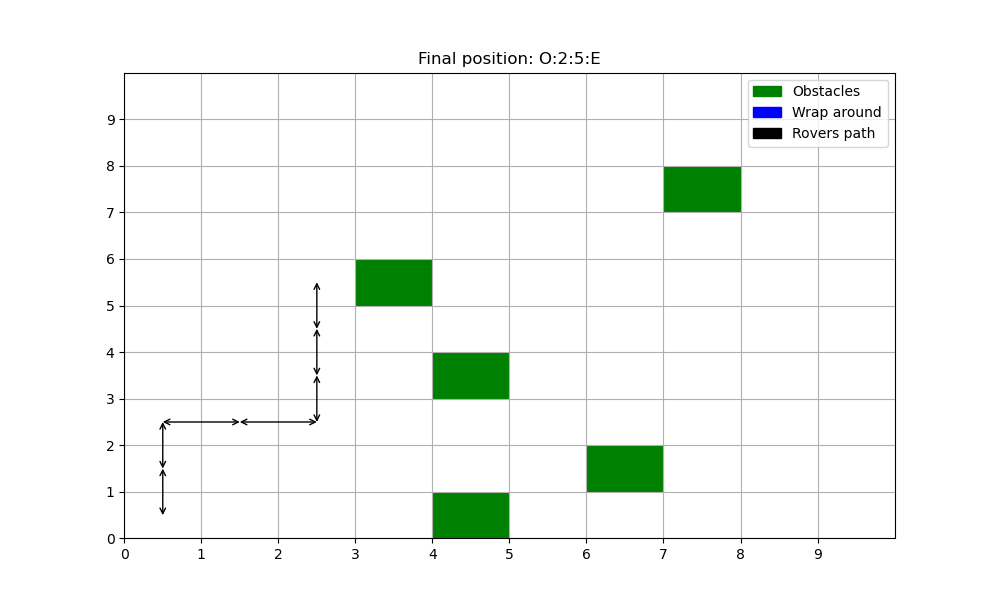

Welcome to Mars Rovers’ documentation!¶
Author: Rubén Cañadas Rodríguez
Date: 27-04-2022
This is a basic documentation of rovers functionality. To be able to execute all the functions and make Mars Rovers walk and explore we must make sure we have all the required libraries installed:
1 | pip install -r requirements.txt
|
Once we have the libraries installed we can start. To move the rovers we only have to introduce in the terminal the next command:
1 | python src/main.py
|
Then introduce the movements the Rovers has to do:
1 | Write the instructions for rovers e.g MMRMMLM:
|
When you introduce the movements, Mars Rovers will perform them and a plot of its path will appear:
{kind=link}
We can change some parameters in the config.py file inside the src directory. For example, we can set the number of obstacles in the grid, the size of the grid and also if we want to create the draw of the rovers path.
Inside the src directory we find the tests directory. This are basic integration tests to check the proper behavior of the Rovers in the grid. Unit tests for checking the functionality of each method could also be done in future work. If pytest is installed we only have to run the next command:
1 2 3 4 5 6 7 8 9 10 11 | python pytest
============================= test session starts ==============================
platform darwin -- Python 3.10.0, pytest-7.1.2, pluggy-1.0.0
rootdir: /Users/rubencr/Desktop/rovers
plugins: Faker-13.3.4
collected 10 items
src/tests/test_rovers.py .......... [100%]
============================== 11 passed in 1.70s ==============================
|
This means that the tests have passed properly without any failure. We also can control rovers movement from python importing the corresponding modules as follows:
1 2 3 4 5 6 7 8 9 10 11 12 13 | from mars import Grid, Rovers, Obstacles
from config import NUMBER_OF_OBSTACLES, GRID_SIZE
instructions = 'MMRMMLM'
grid = Grid(GRID_SIZE, GRID_SIZE)
obstacles = Obstacles()
random_obstacles = obstacles.create_obstacles_in_grid(grid, NUMBER_OF_OBSTACLES).get_obstacles_positions()
rovers = Rovers()
for instruction in instructions:
if rovers.can_move():
rovers.move(instruction, grid, obstacles)
else:
break
|
Mathematical concepts¶
Rovers starts its journey in the position (0,0) facing north. It only moves cell from cell but it also can rotate. To model the Rovers rotation we can use rotation matrices. Rovers has one direction vector. At the beginning, as it is facing north, the direction vector is (0,1). According to the rotation commands (R or L) we will apply rotation matrices to this vector. This will allow the Rovers to rotate. The following is the rotation matrix clockwise (right rotation -> R) and its transpose will be the anti-clockwise rotation matrix (left rotation -> L). In this case, for rovers rotation, the angle is 90º.
Right rotation matrix:
\[\begin{split}R_{\theta} = \begin{bmatrix} cos\theta & -sin\theta \\ sin\theta & cos\theta \\ \end{bmatrix}\end{split}\]
Left rotation matrix:
\[\begin{split}R_{\theta}^T = \begin{bmatrix} cos\theta & sin\theta \\ -sin\theta & cos\theta \\ \end{bmatrix}\end{split}\]
Apart from the rotation, we also have the movement controlled by M command. The movement simply makes the rovers move to the next cell. The movement is defined by the direction vector. Depending on what direction ther rovers is facing it will have one value or another:
North = (0, 1)
South = (0, -1)
East = (1, 0)
West = (-1, 0)
To obtain the next position we only have to sum the direction vector to the current position of the rovers:
Rotations and Movements is all we need to make Mars Rovers move in the grid properly so it can explore the new planet and send images and information back to the earth.